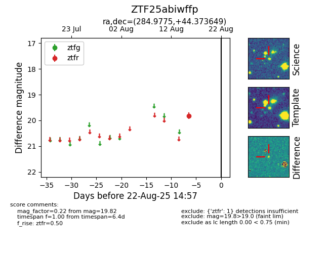

Target ZTF25abiwffp at 2025-08-22 15:21, see:
FINK: fink-portal.org/ZTF25abiwffp
Lasair: lasair-ztf.lsst.ac.uk/objects/ZTF25abiwffp
ALeRCE: alerce.online/object/ZTF25abiwffp
alt names
ZTF25abiwffp (ztf,alerce)
coordinates:
equatorial (ra, dec) = (284.9775,+44.37365)
galactic (l, b) = (74.5433,+17.18000)
photometry
last ztfr=19.82
1 ztfr detections
